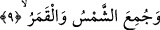
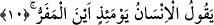

aynıdır. Yâni husûf ve küsûf demek ışık veren iki kaynaktan birisinin ya da bir kısmının
ışığı gitti, çekildi, kayboldu demektir.
Salâtu’l-küsûf/küsûf namazı müekked bir sünnettir. Güneş ya da ay tutulduğunda
insanlar namaza sığınırlar. Güneş tutulması namazı iki rekâtlı nâfile bir namazdır. Küsûf
namazını insanlara cuma imamı kıldırır, namazda kırâat uzatılır. İmam kırâatını açıktan
yapmaz ve bu namazda hutbe yoktur.
Ay tutulması namazında ise insanlar bir araya toplanmazlar, herkes namazını evinde
kılar ve bu namaz diğer nâfile namazlar gibi iki rekat olarak kılınır.
9. Güneşle ay bir araya getirildiği zaman!
Peygamber (s.a.) den rivâyet edildiği üzere ışıklarının gitmesi noktasında “bir araya
getirildiği zaman” demektir.
Bu âyeti şöyle anlamak da mümkündür. Güneş ve ay batıdan doğma noktasında bir
araya getirildiği; yâni eşit kılındığı zaman ya da güneş ve ay kendilerine tapanlara bir
hasret, iç yangısı olsun diye cehenneme atıldıkları zaman... “el-Kamer/ay” kelimesinin
iki kez tekrar edilmesi sebepsiz değildir. Çünkü Allah bundan önceki âyette ayın
tutulduğundan söz ederken bu âyette güneş ve ayın bir araya getirilmesinden
bahsetmektedir.
Kâşânî bu son âyet-i kerîmeyi şöyle tefsir eder: “Göz kamaştığı”: Ölümün
korkusundan belererek dehşete kapıldığı ve hayrete düştüğü, “ay tutulduğu” akıl nûrunun
kendisinden gitmesi dolayısıyla kalp ayının tutulduğu, “güneş ve ay bir araya getirildiği
zaman” ruh güneşi ile kalp ayı bir araya getirilip her ikisi aynı şey hâline
dönüştürülerek beden batısından doğduğu zaman bunların ikisi için -hayat durumunda
olduğu gibi- iki rütbe itibar olunamaz, tam aksine ikisi bir tek ruh olmakta bir araya
gelmiş olurlar.
10. O gün insan, “Kaçacak yer neresi!” diyecektir.
“O gün” bu olayların meydana geleceği gün, kıyâmeti inkâr eden “insan” umutsuz bir
şekilde “kaçış nereye diyecek.” Çünkü o gün insan kendisine kaçma fırsatı verebilecek
hiç bir alâmet göremez. İnsanın “kaçış nereye” şeklindeki bu ifâdesi -sözgelimi-
Zeyd’in bulunuşundan ümidini kesen kimsenin “Zeyd nerede?” demesine benzer.
Zeyd’in gelmesinden ümidini kesen kimse de âyette olduğu gibi onu ele geçirebileceği
alâmetleri bulamadığı için böyle demektedir.